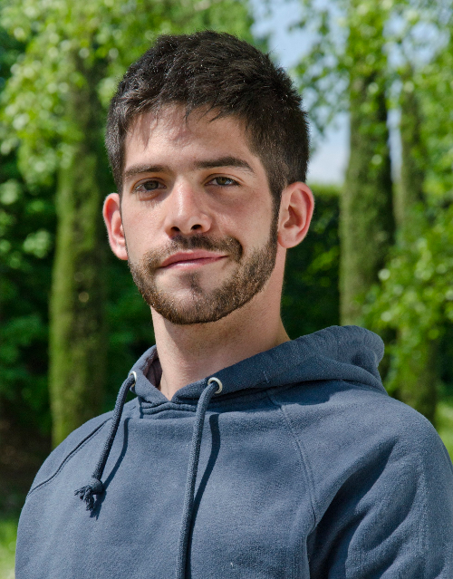
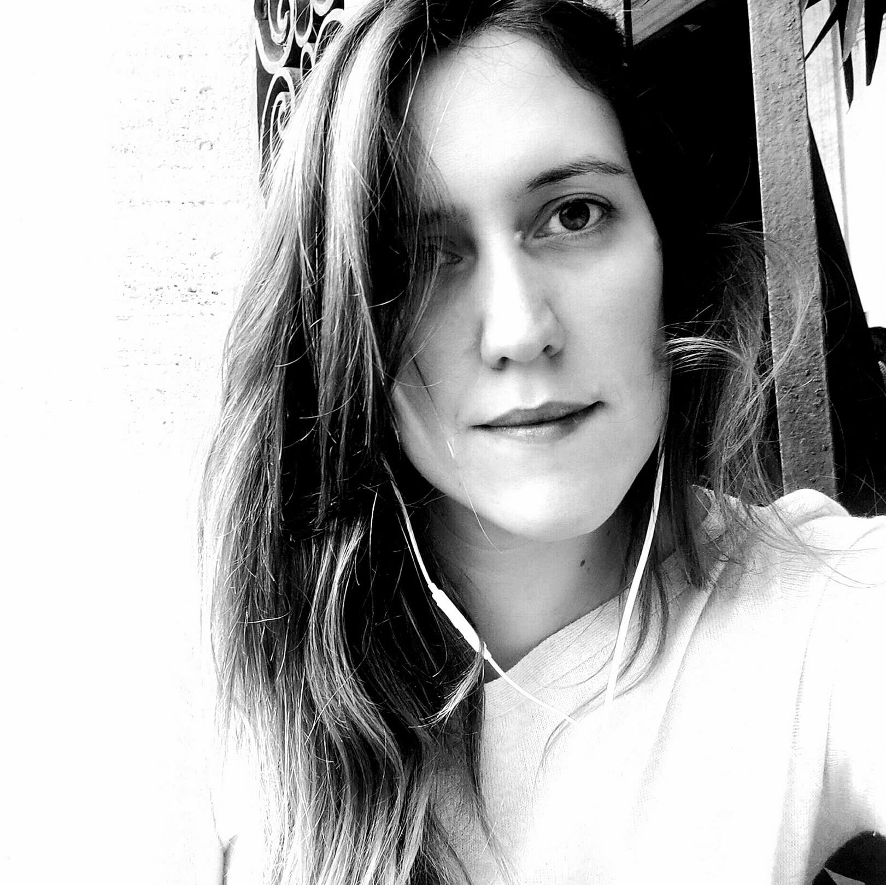
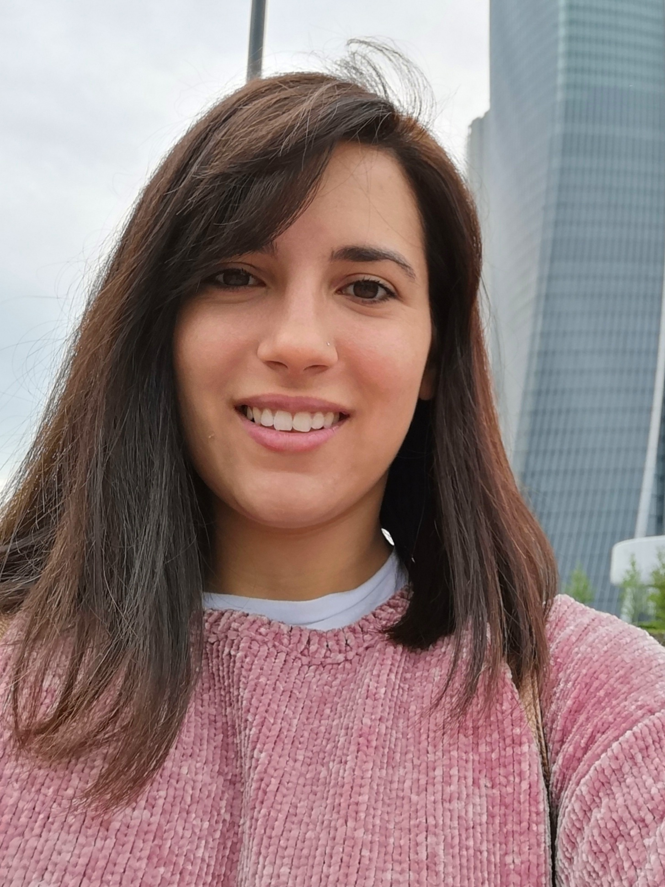
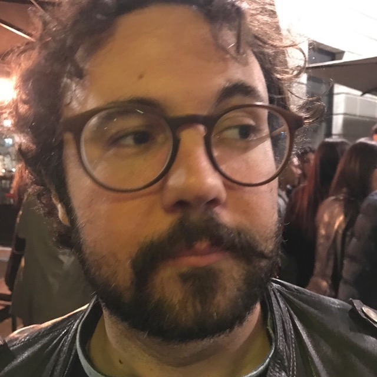
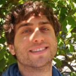

Elections y-SIS 2018 - Candidates
Emanuele Aliverti
I am a PhD student in Statistics at University of Padova (Cycle XXXII), and my supervisor is Bruno Scarpa. Currently, I am also a visiting scholar at Duke University, where I work under the supervision of David Dunson. The focus of my research is on developing and applying statistical methods for complex data. My main interests are scalable Bayesian inference and computational method to perform inference on structured data sources (e.g. tensors, networks, large contingency tables).
Gaia Bertarelli
My name is Gaia Bertarelli and I'm currently a Post-doctoral Research Fellow at the Department of Economics and Management of the University of Pisa. I recived the Ph.D. degree in Statistics (XXVIII°cycle) from the University of Milano-Bicocca, under the main supervision of Prof. M. Giovanna Ranalli (University of Perugia). After about two years working outside the Academia, I enrolled in the Ph.D. program in Statistics because I missed studying and having fun with data. My main research interests lie in survey sampling, unplanned domain estimation, mixture and latent variable models. More recently, I have become interested in developing new statistical methods for the integration of data from different sources. Since 2015, I have been collaborating with ISTAT in research projects aimed at the methodological development of techniques used in the Institute, because I really believe in the power of Official Statistics in the growth-process of a country. I'm also interested in gender statistics as I believe that statistics has the duty to "fight" injustices and inequalities, too. You can find something more about me at in my webpage
Christian Capezza

I am Christian, Capezza, a PhD Student in Industrial Engineering at the University of Naples Federico II (XXXII cycle). I graduated in 2016 in Engineering Management at the same University. My research project regards analysis of big data in engineering fields. I am currently working on functional data analysis and advanced regression methods for ship fuel consumption monitoring. Recently I was visiting PhD student for one academic year (2017-2018) at the Department of Statistical Sciences of the University of Padova.
Alessia Caponera
My name is Alessia Caponera and I am currently a Ph.D. student at the Department of Statistical Sciences at Sapienza University in Rome. I graduated in Statistics in 2016 after completing a double degree program managed by Sapienza University and Université Paris Dauphine. I am mostly interested in space-time spherical random fields and related topics, such as spectral representations, spherical wavelets and needlets, functional data analysis on the sphere. I also appreciate teaching Statistics and any form of knowledge sharing.
Leonardo Egidi
I am Leonardo Egidi and I am currently working as postdoctoral researcher at the Department of Business, Economics, Mathematics and Statistics "Bruno de Finetti" of the University of Trieste. I got my PhD in Statistics at the Department of Statistical Sciences of the University of Padova in March 2018 with a thesis entitled "Developments in Bayesian Hierarchical Models and Prior Specification with Application to Analysis of Soccer Data". My research focuses on mixture models, prior specification, clustering methods and R package developement. Given my interest for sports, and football in particular, I enjoy in developing models for football data, and this gave me the opportunity to become a member of the AUEB Sports Analytics Group (University of Athens). I am currently teaching Statistical Methods to master's students. When I am not involved in Statistics, I am used to take the guitar and produce a mixture of noise and words. See my webpage.
Matteo Farnè
Matteo Farnè received his PhD in Statistical Sciences at the University of Bologna in 2016, discussing a thesis entitled “Large covariance matrix estimation by composite minimization” under the guidance of Prof. Angela Montanari. Ammitted to the Superior College of UNIBO in 2010, he spent research periods at University College London in 2012, Stanford University in 2014, European Central Bank in 2015. His research interest include cluster analysis, outlier detection, spectral analysis, factor models, large-dimensional covariance matrix estimation, prediction and classification models. Research fellow since October 2015 at the Department of Statistical Sciences, he continues his research activity working on large-dimensional time series analysis. He also carries out teaching activities in statistics, linear models and time series analysis. See the webpage.
Matteo Fontana

My name is Matteo Fontana, I am currently a 3rd year PhD student at Politecnico di Milano, where I’m working under the supervision of Prof. Massimo Tavoni and Prof. Simone Vantini. I also graduated at Politecnico di Milano, with a thesis in interval-wise inference for functional-on-scalar linear models, with applications to energy consumption data. My main research interests are the development of model free inferential and forecasting techniques for functional and object oriented linear models with applications to energy and climate change economics, finance, chemometrics and neuroscience. I was also one of the organizers of the Statalk2018@Polimi. You can find out something more about me, and some divulgative articles I wrote on my page on the website of COBHAM, the ERC project I’m involved in.